|
Koempels gaan ondergronds in Blegny 23 september 2001 |
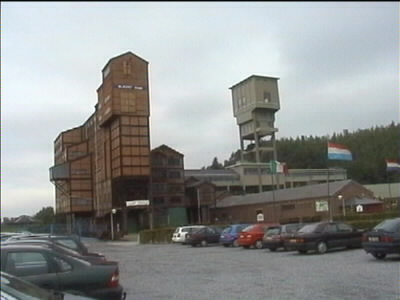
De steenkolenmijn van Blegny (bij Luik) was een van de
laatste Belgische mijnen die dicht ging.
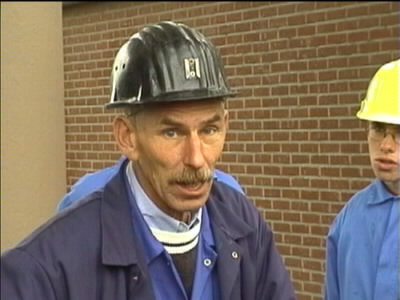
Koempel Willy was onze gids.
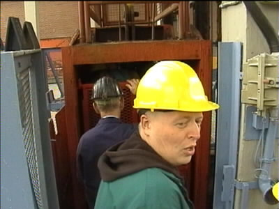
De kleine schachtlift brengt ons 30 meter ondergronds.
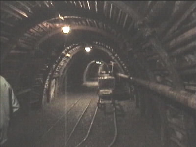
Het water sijpelt door het plafond.
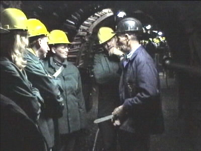
Naast dynamiet werden er in de mijnen ook waterbommen
gebruikt. Willy legt aan koempel Martine uit waar je deze
"patronen" nog meer voor kunt gebruiken.
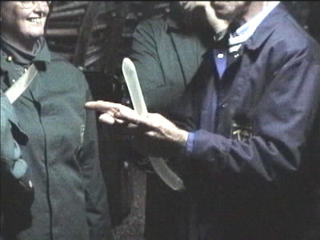
:-))))
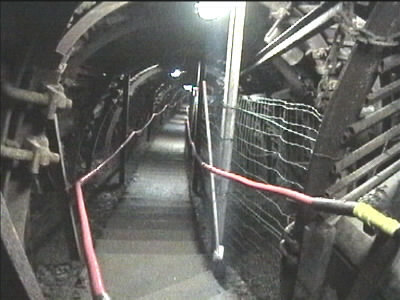
Per trap dalen we naar 60 meter diepte.
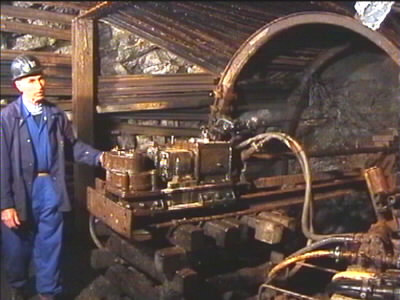
Willy demonstreert de pneumatische boor.
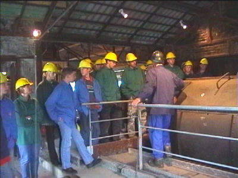
Hier worden de kolen omgekiept.
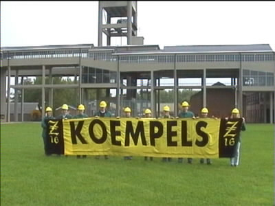
De Z16-KOEMPELS met hun vlag voor de achterkant van
de mijn.
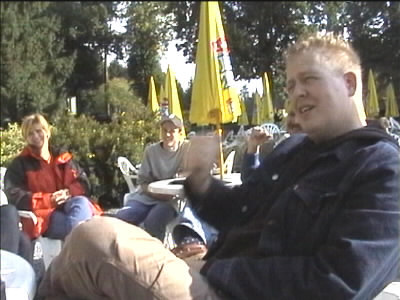
Na afgebierd te hebben in Blegny werd deze goede gewoonte
voortgezet in het kloostercomplex van Valle Dieu. Het heer-
lijke nazomerweer maakte het betere terraswerk mogelijk.
De harde kern nam daarna nog enkele Belgische specialiteiten
van het vat in Gemmenich.
©KPD